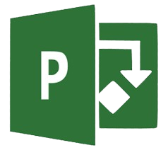
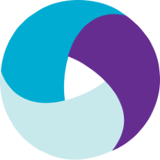
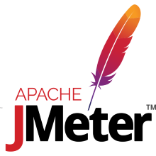

Aquela ferramenta que você Precisa
A melhor plataforma com as melhores ferramentas da engenharia de software você encontra aqui!
Ferramentas
Gerenciamento de projetos
Jira
Jira é um software comercial desenvolvido pela empresa Australiana Atlassian. É uma ferramenta que permite o monitoramento de tarefas e acompanhamento de projetos garantindo o gerenciamento de todas as suas atividades em único lugar.Ver mais
Trello
O Trello é a ferramenta visual que possibilita ao time o gerenciamento de qualquer tipo de projeto, fluxo de trabalho ou monitoramento de tarefas. Adicione arquivos, checklists ou até mesmo automação: personalize tudo para que o time trabalhe melhor.Ver mais
Asana
Asana permite que você saiba quem está fazendo o que e para quando. A comunicação é concentrada e proativa e você sempre saberá o status do trabalho que está sendo feito pela sua equipe. Passe menos tempo conversando sobre o trabalho e mais tempo fazendo o que precisa ser feito.Ver mais

Microsoft Project
O Microsoft Project é uma ferramenta de gerenciamento de projetos amplamente utilizada porque permite aos gerentes de projetos criar e gerenciar planos de projetos, definir tarefas e recursos, acompanhar o progresso e o orçamento, e colaborar com equipes remotasVer mais
Testes de software
Postman
O Postman é um API Client que facilita aos desenvolvedores criar, compartilhar, testar e documentar APIs. Isso é feito, permitindo aos usuários criar e salvar solicitações HTTP e HTTPs simples e complexas, bem como ler suas respostas.Ver mais

Selenium
Selenium é um framework portátil para testar aplicativos web. O Selenium fornece uma ferramenta de reprodução para a criação de testes funcionais sem a necessidade de aprender uma linguagem de script de teste.Ver mais

Appium
Appium é uma ferramenta de automação de código aberto para executar scripts e testar aplicativos nativos, aplicativos móveis-web e aplicativos híbridos no Android ou iOS usando um webdriver.Ver mais

Apache Jmeter
JMeter é uma ferramenta que realiza testes de carga e de estresse em recursos estáticos ou dinâmicos oferecidos por sistemas computacionais. Além disso, é parte do projeto Jakarta, da Apache Software Foundation.Ver mais
Análise, Gestão de Requisitos e outros